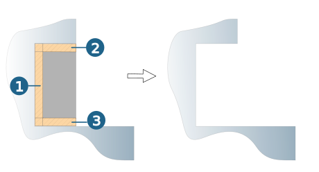
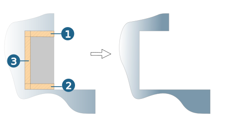

Parameters
Allowance
Allowance XY (1): Enter the remaining stock thickness at the sides of the T-slot.
Allowance top (2): Enter the remaining stock thickness at the bottom of the T-slot.
Allowance bottom (3): Enter the remaining stock thickness in the upper area of the T-slot.
The defined allowance values are also used for rapid link movements during collision checks.
|  |
Axial infeed / Lateral infeed area
Max. axial step (1): Enter a maximum permissible distance between the machining planes. The value may not be greater than disc height of the tool. The value for the infeed is automatically adjusted to the total infeed (top, bottom), no finishing cut is executed.
The max. axial infeed may not be greater than disc height of the tool. Standard = 0.75 * disc height
Define the width of the infeed area (2) using the Width parameter on the Contours dialog page.
Max. lateral step (3): Enter a maximum permissible distance for the infeed in the XY direction to the next path.
 |
Finish allowance top (1): Enter the stock thickness used for a finishing cut in the upper area of the T-slot. The value is added to the "Allowance top".
Finish allowance bottom (2): Enter the stock thickness used for a finishing cut in the base of the T-slot. The value is added to the "Allowance bottom".
Finish allowance (3): Enter the stock thickness used for a finishing cut at the sides of the T-slot. The value is added to the "Allowance XY".
|  |
More options
Prefer spiral: Wherever possible, execute a spiral infeed to the next machining plane.
Break through length (1): If the slot is open in the upper or lower area, extend machining in the upwards or downwards direction by the specified value. No finishing cut (in the case of ‘Finish allowance top’ or ‘Finish allowance bottom’) is calculated for this open side.
 |
Spring path: For closed contours, an additional finish pass is performed for each machining plane. This removes fine machining cavities. Define the number of empty cuts to be performed using Pass number.
Path compensation
For further information, see section Path compensation.
Retract mode
The retract mode defines the Z level where the system executes horizontal infeed movements. The mode set is valid for all machining directions (incl. approach, retract and return movement macros) and for the profiles machined with them. Exception: Machining in zigzag mode without return macro.
Clearance distance: All retract and infeed movements are executed via the clearance distance. Starting and end positions of an infeed movement in rapid are displaced in Z direction in order to guarantee a collision-free linear infeed movement. The clearance distance is added to these positions.
Clearance plane: All retract and infeed movements are executed via the clearance plane.
Clearance
Clearance plane and clearance distance apply in the direction of the Z axis of the current frame.
Clearance plane: Plane for rapid tool movements. Specification in absolute dimensions. Define the height by right-clicking on the icon. Select the desired contour.
Clearance distance: distance to be defined to the toolpath to be milled. Above the clearance distance, infeed takes place as rapid in the Z direction (A); below the clearance distance infeed takes place at the Z feedrate (B).
Side clearance: Minimum distance in lateral direction from the surface of the model.